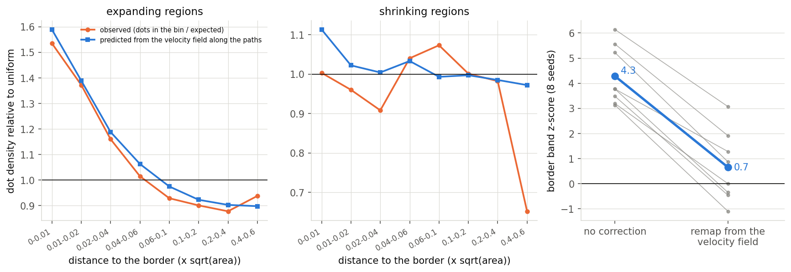
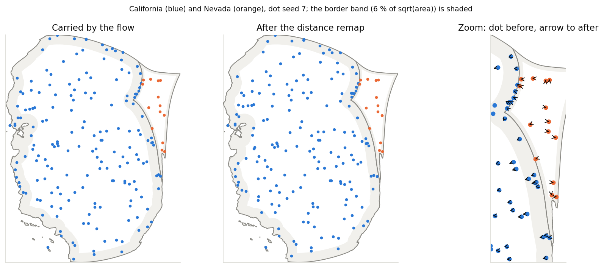
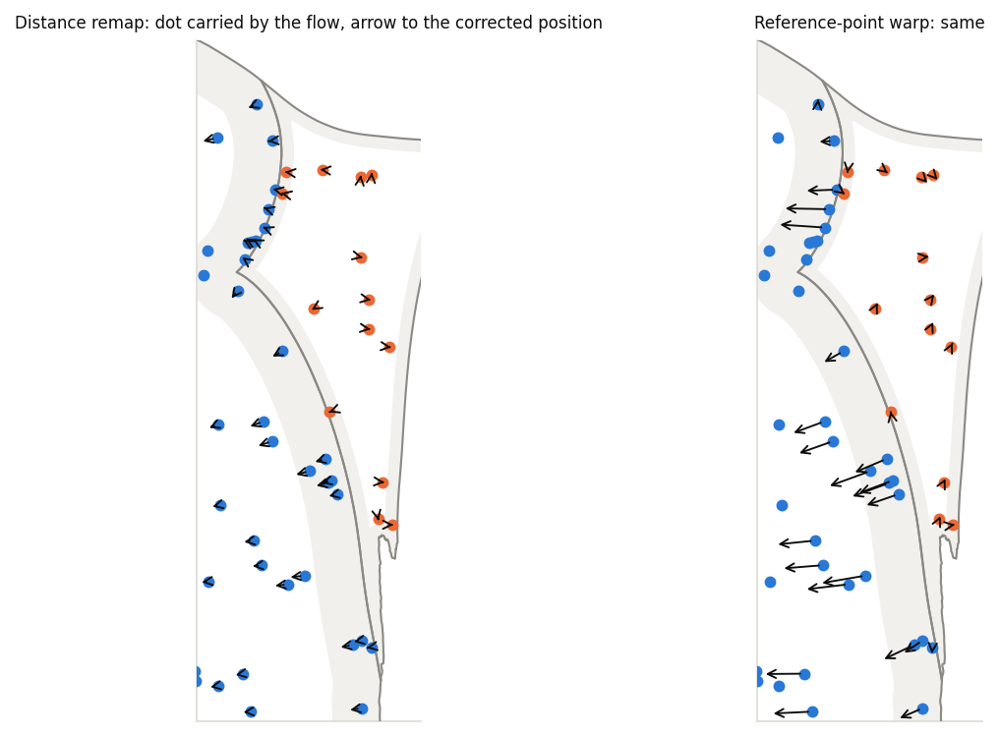
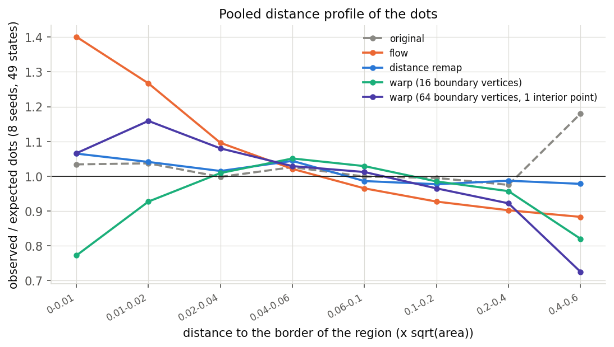
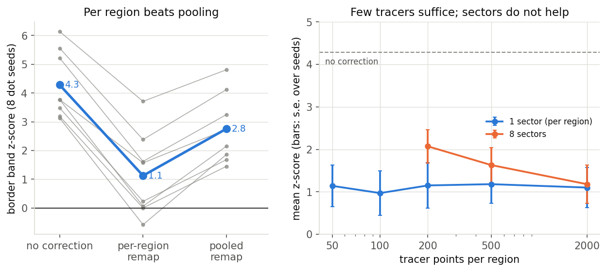
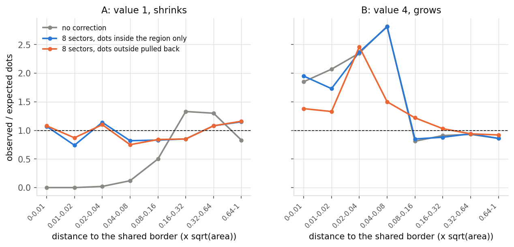
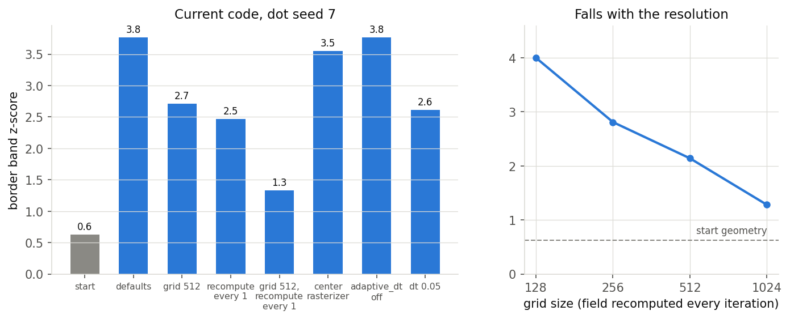
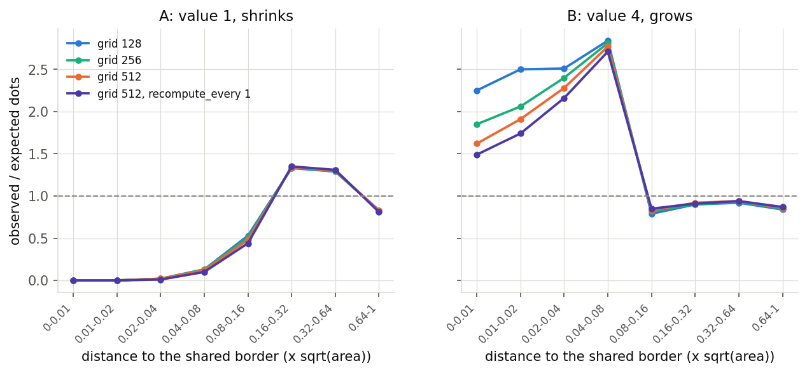
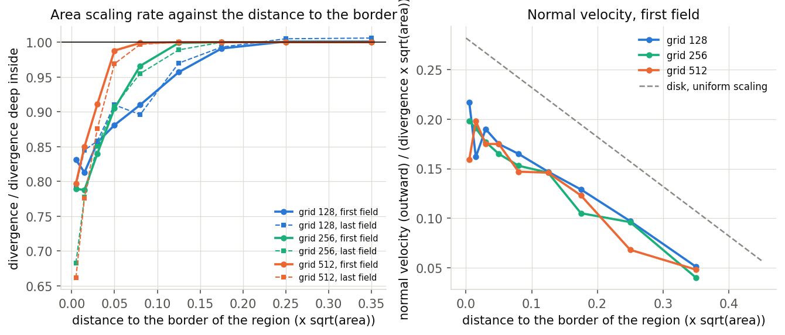

Dots carried along with the flow cartogram are over-represented near region borders also on the current code (border-band z-score +4.3 over 8 dot seeds against +0.6 on the original map; unchanged by the exact rasterizer, the adaptive step and recompute_on_rise; it falls with the grid size when the field is recomputed every iteration). The saved velocity fields show why: the divergence of the field (the area scaling rate) is constant inside a region, as for a uniform scaling, but falls to 0.7 to 0.8 of that value in a band along the border whose width follows the cell size. Integrating the divergence along each dot's own path predicts the observed dot density near the border of expanding regions (1.59 predicted, 1.54 observed in the first 1 % of the distance) and a remap built from it, without extra tracers and with the sum done in place during the morph (no snapshots, about 6 % extra morph time, 0.2 s for the remap), lowers the mean z-score from 4.3 to 0.67 with a median move of 0.7 % of the region width. Remaps built from tracer points (z 1.1) or from a thin-plate-spline warp through 16 boundary vertices (z 0.9) also work; pooling the regions and sectors around the centroid do not.
border_band.py, resolution_scan.py, two_regions.py, where_are_the_dots.py, distance_remap.py (writes a cache that the following scripts read), sector_remap.py, toy_remap.py and landmark_warp.py, velocity_profile.py, jacobian_path.py, inplace_proxy.py, cost.py, sections.py and jitter.py produce the data in data/; make_tables.py writes data/tables.md (every table below) and make_figures.py the figures. The cache data/states_morph.pkl is not committed. The border-band z-score counts the dots inside a band (6 % of sqrt(area) wide) along the border of their own region and compares it with the number expected for uniform dots, as a binomial z-score summed over regions; its standard deviation over seeds for a uniform sample is about 1.
adaptive_dt off (+3.77) and recompute_on_rise do not change it, so #119 and #123 did not affect it. With the field recomputed every iteration it falls with the grid size: +4.0, +2.8, +2.1 and +1.3 at grids 128, 256, 512 and 1024.save_internals) and the positions of the dots at every iteration (snapshot_every=1) are enough. Mean z-score over 8 seeds: 4.28 before, 0.65 after (the original map: 0.63); the median dot moves 0.7 % of sqrt(area), the 95th percentile 2.9 %.save_internals and no snapshot_every. The solver overwrites one array for every field, so a change of the field has to be detected by content and not by object identity.sqrt(area), the 95th percentile 2.4 %, the largest 8 %.sqrt(area) for all regions gives a mean z-score of 2.8. **A limited set of reference points is enough**: 50 tracers per region give a mean z-score of 1.14 (2000: 1.10). **Sectors around the centroid** (the angular sector of the nearest border point decides which remap applies) do not help on the states (1.21, 1.18 and 1.71 for 4, 8 and 16 sectors).sqrt(area) against the flow position (95th percentile 6.6 %), and the profile undershoots at the border (0.77) and deep inside (0.82). Adding the carried point nearest to the centroid changes little.| variant | status | iterations | observed vs expected | z |
|---|---|---|---|---|
| start | - | 0 | 458 vs 447.0 | 0.63 |
| defaults (grid 256, recompute_every 10) | converged | 112 | 500 vs 435.0 | 3.77 |
| grid 512 | converged | 214 | 483 vs 436.3 | 2.71 |
| recompute_every 1 | converged | 106 | 482 vs 439.3 | 2.47 |
| grid 512, recompute_every 1 | converged | 209 | 463 vs 439.9 | 1.33 |
| defaults, density_rasterization center | converged | 113 | 496 vs 434.8 | 3.55 |
| defaults, adaptive_dt off | converged | 112 | 500 vs 435.0 | 3.77 |
| defaults, dt 0.05 | completed | 400 | 481 vs 435.9 | 2.61 |
| variant | status | iterations | observed vs expected | z |
|---|---|---|---|---|
| grid 128, recompute_every 1 | converged | 55 | 509 vs 439.8 | 4.0 |
| grid 256, recompute_every 1 | converged | 106 | 488 vs 439.3 | 2.81 |
| grid 512, recompute_every 1 | converged | 209 | 477 vs 439.9 | 2.14 |
| grid 1024, recompute_every 1 | completed | 400 | 462 vs 439.8 | 1.28 |
| variant | region | 0-0.01 | 0.01-0.02 | 0.02-0.04 | 0.04-0.08 | 0.08-0.16 | 0.16-0.32 | 0.32-0.64 | 0.64-1 |
|---|---|---|---|---|---|---|---|---|---|
| grid 128 | A | 0.00 | 0.00 | 0.02 | 0.13 | 0.53 | 1.33 | 1.29 | 0.83 |
| grid 128 | B | 2.25 | 2.50 | 2.51 | 2.84 | 0.79 | 0.90 | 0.92 | 0.84 |
| grid 256 | A | 0.00 | 0.00 | 0.02 | 0.13 | 0.51 | 1.34 | 1.29 | 0.83 |
| grid 256 | B | 1.85 | 2.06 | 2.40 | 2.81 | 0.82 | 0.90 | 0.93 | 0.85 |
| grid 512 | A | 0.00 | 0.00 | 0.02 | 0.12 | 0.48 | 1.34 | 1.30 | 0.83 |
| grid 512 | B | 1.62 | 1.91 | 2.28 | 2.77 | 0.83 | 0.92 | 0.94 | 0.86 |
| grid 512, recompute_every 1 | A | 0.00 | 0.00 | 0.01 | 0.10 | 0.44 | 1.35 | 1.31 | 0.81 |
| grid 512, recompute_every 1 | B | 1.49 | 1.74 | 2.16 | 2.71 | 0.85 | 0.91 | 0.94 | 0.87 |
| seed | before | per region | pooled | shift per region: median / 95th pct / max (in sqrt(area)) | shift pooled: median / 95th pct / max |
|---|---|---|---|---|---|
| 0 | 3.19 | 0.0 | 1.45 | 0.0068 / 0.0244 / 0.078 | 0.0055 / 0.0066 / 0.007 |
| 1 | 6.14 | 3.71 | 4.81 | 0.0067 / 0.0246 / 0.08 | 0.0054 / 0.0065 / 0.007 |
| 2 | 3.77 | 1.57 | 2.73 | 0.0072 / 0.0241 / 0.078 | 0.0055 / 0.0066 / 0.007 |
| 3 | 5.56 | 2.38 | 4.12 | 0.0069 / 0.0245 / 0.081 | 0.0054 / 0.0065 / 0.007 |
| 4 | 3.48 | 0.23 | 1.68 | 0.0069 / 0.0247 / 0.074 | 0.0055 / 0.0066 / 0.007 |
| 5 | 5.22 | 1.62 | 3.25 | 0.0071 / 0.0241 / 0.079 | 0.0054 / 0.0065 / 0.007 |
| 6 | 3.13 | -0.58 | 1.86 | 0.0072 / 0.0247 / 0.081 | 0.0057 / 0.0066 / 0.007 |
| 7 | 3.77 | 0.06 | 2.15 | 0.007 / 0.0245 / 0.078 | 0.0056 / 0.0066 / 0.007 |
Mean z over the seeds: before 4.28, per region 1.12, pooled 2.76.
| sectors | tracers per region | z mean | z sd | z max | shift median | shift 95th pct |
|---|---|---|---|---|---|---|
| 1 | 2000 | 1.1 | 1.34 | 3.65 | 0.0072 | 0.0247 |
| 1 | 500 | 1.18 | 1.26 | 3.59 | 0.0072 | 0.0294 |
| 1 | 200 | 1.15 | 1.51 | 4.35 | 0.0098 | 0.0339 |
| 1 | 100 | 0.97 | 1.48 | 4.0 | 0.0131 | 0.0463 |
| 1 | 50 | 1.14 | 1.39 | 3.48 | 0.0139 | 0.0499 |
| 4 | 2000 | 1.21 | 1.19 | 3.42 | 0.0076 | 0.0381 |
| 8 | 2000 | 1.18 | 1.28 | 3.71 | 0.0083 | 0.0381 |
| 16 | 2000 | 1.71 | 1.01 | 3.54 | 0.0086 | 0.0389 |
| 8 | 500 | 1.63 | 1.15 | 4.06 | 0.011 | 0.0454 |
| 8 | 200 | 2.07 | 1.12 | 3.77 | 0.0153 | 0.0589 |
| sectors | dots outside their region | when | region | share of the region's dots inside it | 0-0.01 | 0.01-0.02 | 0.02-0.04 | 0.04-0.08 | 0.08-0.16 | 0.16-0.32 | 0.32-0.64 | 0.64-1 |
|---|---|---|---|---|---|---|---|---|---|---|---|---|
| 1 | left alone | before | A | - | 0.00 | 0.00 | 0.02 | 0.12 | 0.51 | 1.33 | 1.30 | 0.83 |
| 1 | left alone | before | B | - | 1.90 | 2.03 | 2.41 | 2.76 | 0.83 | 0.90 | 0.94 | 0.86 |
| 1 | left alone | after | A | 1.000 | 0.43 | 0.22 | 0.45 | 0.74 | 0.95 | 0.94 | 1.01 | 1.37 |
| 1 | left alone | after | B | 0.666 | 1.85 | 2.10 | 2.46 | 2.81 | 0.80 | 0.91 | 0.93 | 0.85 |
| 8 | left alone | before | A | - | 0.00 | 0.00 | 0.02 | 0.12 | 0.50 | 1.33 | 1.30 | 0.83 |
| 8 | left alone | before | B | - | 1.85 | 2.07 | 2.35 | 2.82 | 0.81 | 0.91 | 0.93 | 0.86 |
| 8 | left alone | after | A | 1.000 | 1.07 | 0.74 | 1.14 | 0.82 | 0.83 | 0.85 | 1.08 | 1.15 |
| 8 | left alone | after | B | 0.666 | 1.95 | 1.73 | 2.37 | 2.81 | 0.85 | 0.88 | 0.94 | 0.86 |
| 1 | pulled back | before | A | - | 0.00 | 0.00 | 0.02 | 0.13 | 0.50 | 1.33 | 1.30 | 0.83 |
| 1 | pulled back | before | B | - | 1.83 | 2.05 | 2.38 | 2.80 | 0.82 | 0.90 | 0.93 | 0.86 |
| 1 | pulled back | after | A | 1.000 | 0.44 | 0.21 | 0.46 | 0.68 | 0.96 | 0.93 | 1.02 | 1.37 |
| 1 | pulled back | after | B | 1.000 | 0.18 | 1.94 | 2.48 | 1.72 | 1.17 | 1.06 | 0.94 | 0.93 |
| 8 | pulled back | before | A | - | 0.00 | 0.00 | 0.02 | 0.12 | 0.50 | 1.33 | 1.30 | 0.83 |
| 8 | pulled back | before | B | - | 1.77 | 2.03 | 2.38 | 2.75 | 0.82 | 0.91 | 0.94 | 0.86 |
| 8 | pulled back | after | A | 1.000 | 1.08 | 0.87 | 1.10 | 0.75 | 0.84 | 0.85 | 1.08 | 1.16 |
| 8 | pulled back | after | B | 1.000 | 1.38 | 1.33 | 2.46 | 1.50 | 1.22 | 1.03 | 0.94 | 0.92 |
| seed | original map | carried by the flow |
|---|---|---|
| 0 | -0.11 | 3.19 |
| 1 | 2.31 | 6.14 |
| 2 | 0.98 | 3.77 |
| 3 | 0.98 | 5.56 |
| 4 | -0.29 | 3.48 |
| 5 | 1.15 | 5.22 |
| 6 | -0.58 | 3.13 |
| 7 | 0.63 | 3.77 |
| mean | 0.63 | 4.28 |
| boundary vertices | interior points | z mean (sd) | dots inside their region | shift against the flow: median / 95th pct | carried tracers against the warp: median / 95th pct |
|---|---|---|---|---|---|
| 8 | 0 | 1.13 (1.24) | 0.9391 | 0.0254 / 0.1256 | 0.026 / 0.125 |
| 16 | 0 | 0.86 (1.43) | 0.9778 | 0.0156 / 0.0661 | 0.0162 / 0.0726 |
| 32 | 0 | 1.89 (1.27) | 0.9927 | 0.0115 / 0.0566 | 0.0122 / 0.0598 |
| 64 | 0 | 2.44 (1.25) | 0.9963 | 0.0102 / 0.0512 | 0.0105 / 0.0563 |
| 128 | 0 | 2.87 (1.2) | 0.9992 | 0.0096 / 0.0491 | 0.0099 / 0.058 |
| 32 | 1 | 1.81 (1.32) | 0.9922 | 0.0083 / 0.0457 | 0.0083 / 0.0448 |
| 64 | 1 | 2.31 (1.25) | 0.9963 | 0.0072 / 0.0391 | 0.0071 / 0.0382 |
| 64 | 5 | 2.35 (1.27) | 0.9964 | 0.0067 / 0.0369 | 0.0066 / 0.0352 |
| 128 | 5 | 2.81 (1.23) | 0.9993 | 0.0063 / 0.0348 | 0.0061 / 0.0346 |
| dots | 0-0.01 | 0.01-0.02 | 0.02-0.04 | 0.04-0.06 | 0.06-0.1 | 0.1-0.2 | 0.2-0.4 | 0.4-0.6 |
|---|---|---|---|---|---|---|---|---|
| original | 1.03 | 1.04 | 1.00 | 1.03 | 1.00 | 0.99 | 0.97 | 1.18 |
| flow | 1.40 | 1.27 | 1.10 | 1.02 | 0.96 | 0.93 | 0.90 | 0.88 |
| distance remap | 1.06 | 1.04 | 1.01 | 1.04 | 0.99 | 0.98 | 0.99 | 0.98 |
| warp (16 boundary vertices) | 0.77 | 0.93 | 1.01 | 1.05 | 1.03 | 0.98 | 0.96 | 0.82 |
| warp (64 boundary vertices, 1 interior point) | 1.07 | 1.16 | 1.08 | 1.03 | 1.01 | 0.96 | 0.92 | 0.72 |
Divergence relative to its value deep inside the region (1 = uniform scaling), and normal velocity (outward) divided by divergence x sqrt(area); the disk with uniform scaling gives 0.282 at the border and falls with slope -0.5.
| grid | field | quantity | 0-0.01 | 0.01-0.02 | 0.02-0.04 | 0.04-0.06 | 0.06-0.1 | 0.1-0.15 | 0.15-0.2 | 0.2-0.3 | 0.3-0.4 |
|---|---|---|---|---|---|---|---|---|---|---|---|
| grid 128 | first | divergence | 0.83 | 0.81 | 0.86 | 0.88 | 0.91 | 0.96 | 0.99 | 1.00 | 1.00 |
| grid 128 | first | normal velocity | 0.22 | 0.16 | 0.19 | 0.17 | 0.17 | 0.15 | 0.13 | 0.10 | 0.05 |
| grid 128 | last | divergence | 0.79 | 0.84 | 0.86 | 0.91 | 0.90 | 0.97 | 0.99 | 1.00 | 1.01 |
| grid 128 | last | normal velocity | 0.16 | 0.18 | 0.18 | 0.17 | 0.15 | 0.13 | 0.12 | 0.06 | 0.04 |
| grid 256 | first | divergence | 0.79 | 0.79 | 0.84 | 0.91 | 0.97 | 1.00 | 1.00 | 1.00 | 1.00 |
| grid 256 | first | normal velocity | 0.20 | 0.19 | 0.18 | 0.17 | 0.15 | 0.15 | 0.10 | 0.10 | 0.04 |
| grid 256 | last | divergence | 0.68 | 0.78 | 0.85 | 0.91 | 0.95 | 0.99 | 1.00 | 1.00 | 1.00 |
| grid 256 | last | normal velocity | 0.17 | 0.16 | 0.17 | 0.15 | 0.15 | 0.12 | 0.10 | 0.06 | 0.02 |
| grid 512 | first | divergence | 0.80 | 0.85 | 0.91 | 0.99 | 1.00 | 1.00 | 1.00 | 1.00 | 1.00 |
| grid 512 | first | normal velocity | 0.16 | 0.20 | 0.17 | 0.17 | 0.15 | 0.15 | 0.12 | 0.07 | 0.05 |
| grid 512 | last | divergence | 0.66 | 0.78 | 0.88 | 0.97 | 1.00 | 1.00 | 1.00 | 1.00 | 1.00 |
| grid 512 | last | normal velocity | 0.17 | 0.15 | 0.17 | 0.16 | 0.12 | 0.12 | 0.11 | 0.05 | 0.05 |
The step of every iteration is fitted from the displacements of the dots; the residual of the fit is 0.0000 (median) and 0.0000 (95th percentile). Predicted: harmonic mean of exp(-log J) times the area ratio over the dots in the bin.
| regions | 0-0.01 | 0.01-0.02 | 0.02-0.04 | 0.04-0.06 | 0.06-0.1 | 0.1-0.2 | 0.2-0.4 | 0.4-0.6 | |
|---|---|---|---|---|---|---|---|---|---|
| expanding | observed | 1.53 | 1.37 | 1.16 | 1.01 | 0.93 | 0.90 | 0.88 | 0.94 |
| expanding | predicted | 1.59 | 1.39 | 1.19 | 1.06 | 0.97 | 0.92 | 0.90 | 0.90 |
| shrinking | observed | 1.00 | 0.96 | 0.91 | 1.04 | 1.07 | 1.00 | 0.98 | 0.65 |
| shrinking | predicted | 1.11 | 1.02 | 1.00 | 1.03 | 0.99 | 1.00 | 0.98 | 0.97 |
| seed | before | after | shift: median / 95th pct (in sqrt(area)) |
|---|---|---|---|
| 0 | 3.19 | 0.0 | 0.0062 / 0.0251 |
| 1 | 6.14 | 3.07 | 0.0073 / 0.0275 |
| 2 | 3.77 | 1.28 | 0.0072 / 0.0296 |
| 3 | 5.56 | 1.91 | 0.007 / 0.0284 |
| 4 | 3.48 | -0.46 | 0.0071 / 0.0292 |
| 5 | 5.22 | 0.87 | 0.0074 / 0.0317 |
| 6 | 3.13 | -1.1 | 0.0066 / 0.0316 |
| 7 | 3.77 | -0.35 | 0.0079 / 0.0284 |
| mean | 4.28 | 0.65 |
inplace: log J summed during the morph (no save_internals, no snapshot_every); F of the remap from 400 sample points per region. first field only: the divergence profile of the first velocity field per region and the area ratio of the region, no sum along the paths (F from polygon buffers).
| seed | before | in place (sampled F) | first field only |
|---|---|---|---|
| 0 | 3.19 | 0.12 | 2.38 |
| 1 | 6.14 | 3.48 | 5.56 |
| 2 | 3.77 | 1.28 | 3.36 |
| 3 | 5.56 | 1.33 | 4.87 |
| 4 | 3.48 | -0.87 | 2.61 |
| 5 | 5.22 | 0.64 | 3.54 |
| 6 | 3.13 | -0.4 | 2.2 |
| 7 | 3.77 | -0.23 | 2.55 |
| mean | 4.28 | 0.67 | 3.38 |
Morph time without the sum in place: 0.31, 0.214, 0.218 s (3 runs after a warm-up); with the sum in place in a Python wrapper: 0.236, 0.235, 0.232 s, of which 0.0141, 0.0136, 0.0136 s in the sum itself. Memory: one float per dot, and the divergence of the current field (one grid) while it is in use.
| remap | seconds | z after (before: 3.19) | median shift (x sqrt(area)) |
|---|---|---|---|
| 26 distance points, polygon buffers | 14.8 | 0.12 | 0.006 |
| first order, no buffers | 0.04 | 1.51 | 0.0009 |
| 200 sample points per region | 0.13 | 0.35 | 0.0073 |
| 400 sample points per region | 0.17 | 0.52 | 0.0067 |
| 1000 sample points per region | 0.36 | 0.06 | 0.0061 |
A morph with the dots and, per region, probe points along the inward normals at 24 points spread along the border (11 distances from 0 to 12 cells and 4 from 0.1 to 0.3 of sqrt(area)), all with the area scaling summed in place. Remaps of the dots, z-score of the border band: pooled c(d) from the dots (PR 133); per-section c(d) from the probes with a first-order strip remap (d' = w C(d) / C(w)); pooled c(d) from the probes with the full remap of PR 133.
| seed | before | pooled, from the dots | per section, strip, from the probes | pooled, from the probes |
|---|---|---|---|---|
| 0 | 3.19 | 0.41 | 1.1 | -1.16 |
| 1 | 6.14 | 3.3 | 4.35 | 2.73 |
| 2 | 3.77 | 0.81 | 2.15 | 0.41 |
| 3 | 5.56 | 1.8 | 3.07 | 1.97 |
| 4 | 3.48 | -0.35 | 1.33 | -0.75 |
| 5 | 5.22 | 0.64 | 2.32 | 0.58 |
| 6 | 3.13 | -0.4 | 0.0 | -1.79 |
| 7 | 3.77 | -0.35 | 1.28 | -0.23 |
| mean | 4.28 | 0.73 | 1.95 | 0.22 |
| border | 0-0.01 | 0.01-0.02 | 0.02-0.04 | 0.04-0.06 | 0.06-0.1 | 0.1-0.2 | 0.2-0.4 | 0.4-0.6 | |
|---|---|---|---|---|---|---|---|---|---|
| border with another state | observed / expected | 1.37 | 1.21 | 1.07 | 1.01 | 0.99 | 0.94 | 0.91 | 0.82 |
| border with another state | predicted from the probes of that kind | 1.37 | 1.38 | 1.19 | 1.06 | 1.00 | 0.96 | 0.93 | 0.00 |
| border with another state | predicted from the pooled probes | 1.37 | 1.35 | 1.17 | 1.07 | 1.00 | 0.96 | 0.93 | 0.00 |
| border with the outside | observed / expected | 1.45 | 1.40 | 1.10 | 1.06 | 0.89 | 0.90 | 0.88 | 0.78 |
| border with the outside | predicted from the probes of that kind | 1.46 | 1.34 | 1.17 | 1.07 | 0.95 | 0.91 | 0.89 | 0.00 |
| border with the outside | predicted from the pooled probes | 1.67 | 1.45 | 1.22 | 1.06 | 0.95 | 0.91 | 0.89 | 0.00 |
| section | neighbor | c at 1 cell | c at 3 cells | c at 0.2 sqrt(area) |
|---|---|---|---|---|
| 0 | Georgia | 1.0 | 0.87 | 0.87 |
| 1 | Georgia | 1.09 | 0.86 | 0.86 |
| 2 | outside | 1.22 | 1.22 | 1.22 |
| 3 | outside | 1.01 | 0.85 | 0.85 |
| 4 | outside | 1.05 | 0.86 | 0.85 |
| 5 | outside | 1.1 | 0.86 | 0.85 |
| 6 | outside | 1.16 | 0.86 | 0.85 |
| 7 | outside | 1.08 | 0.86 | 0.86 |
| 8 | outside | 1.11 | 1.1 | 1.1 |
| 9 | outside | 1.07 | 0.86 | 0.85 |
| 10 | outside | 1.13 | 0.87 | 0.85 |
| 11 | outside | 1.24 | 0.86 | 0.85 |
| 12 | outside | 2.13 | 2.13 | 2.13 |
| 13 | outside | 1.31 | 0.86 | 0.85 |
| 15 | outside | 1.08 | 0.87 | 0.85 |
| 16 | outside | 1.18 | 0.89 | 0.86 |
| 17 | outside | 1.27 | 0.85 | 0.86 |
| 18 | outside | 0.97 | 0.88 | 0.88 |
| 19 | outside | 1.39 | 1.03 | 0.85 |
| 20 | outside | 1.14 | 0.9 | 0.9 |
| 22 | Alabama | 1.97 | 1.97 | 1.97 |
| 23 | Alabama | 1.15 | 0.89 | 0.89 |
The correction vector of every dot over the frames; second difference in units of the width of the region, and the increment of the correction relative to the carried motion between two frames, over the dots that are corrected.
| profile from, distribution F of the distance from | second difference: median / 95th pct (% of the width) | increment / carried motion: median / 95th pct | median correction at the end (% of the width) |
|---|---|---|---|
| A dots, F sampled | 0.135 / 1.086 | 0.033 / 0.663 | 0.635 |
| B structured probes, F sampled | 0.147 / 1.237 | 0.038 / 0.728 | 0.84 |
| C random probes, F sampled | 0.143 / 1.1 | 0.036 / 0.66 | 0.707 |
| E structured probes, F from buffers | 0.011 / 0.107 | 0.011 / 0.141 | 0.769 |
where_are_the_dots.py prints this table.
| distance (x sqrt(area)) | B dots | inside B | inside A | outside both |
|---|---|---|---|---|
| 0-0.01 | 259 | 0.42 | 0.58 | 0.00 |
| 0.01-0.02 | 288 | 0.37 | 0.62 | 0.01 |
| 0.02-0.04 | 677 | 0.30 | 0.67 | 0.03 |
| 0.04-0.08 | 1600 | 0.24 | 0.72 | 0.03 |
| 0.08-0.16 | 951 | 0.80 | 0.01 | 0.19 |
| 0.16-0.32 | 2177 | 0.74 | 0.00 | 0.26 |
| 0.32-0.64 | 4796 | 0.72 | 0.00 | 0.28 |
| 0.64-1 | 5385 | 0.77 | 0.00 | 0.23 |

Dot density predicted from the velocity field along the dot paths, against the observed one (left and middle), and the border-band z-score of 8 seeds before and after a remap built from the prediction (right).

California (blue) and Nevada (orange), dot seed 7. The original map has no clustering at the borders (z 0.6 over all states); after the flow the dots crowd the border band (z 3.8); the distance remap (z 0.1) and the reference-point warp with 16 boundary vertices (z -0.2) remove it. The border band (6 % of sqrt(area)) is shaded.

Zoom on the California / Nevada border: each arrow goes from the dot carried by the flow to its corrected position, for the distance remap (left) and the warp (right). The warp moves the dots farther.

Pooled distance profile of the dots on the 49 states (observed / expected, mean over 8 seeds). The original dots are flat; the flow has 1.4 times the expected dots in the first 1 % of the distance and 0.9 times beyond 0.1; the distance remap is flat again; the 16-vertex warp undershoots at the border and deep inside.

The distance remap on the states. Left: z-score of the border band for 8 dot seeds (grey lines) and their mean (blue), without correction, with a remap per region and with one pooled remap. Right: mean z-score against the number of tracer points per region, with one and with 8 sectors around the centroid.

The remap on the two-region case (grid 256). The shrinking region A moves to the expected counts. The growing region B changes little when only dots inside it are moved; pulling back the dots that are outside it (orange) brings them inside but they land just inside the border.

Border band z-score of the dots on the current code. Left: dot seed 7 for the defaults and single changes (the start geometry is 0.6); the center rasterizer and adaptive_dt off do not change it. Right: with the field recomputed every iteration it falls with the grid size.

Two squares with values 1 and 4, observed / expected dots by distance to the shared border. The shrinking region A is empty along the border at every grid size; the growing region B has 1.5 to 2.8 times the expected dots there, less with a finer grid and recompute_every 1.

Velocity field against the distance to the border of the region (median over the regions, first and last field of the morph, three grid sizes). Left: the divergence relative to its value deep inside; it is 1 (uniform scaling) beyond about 0.15 of sqrt(area) and falls to 0.7 to 0.8 in a band along the border whose width shrinks with the cell size. Right: the normal velocity, which is close to linear in the distance with the slope of a disk under uniform scaling and an offset of about 0.08 below it.